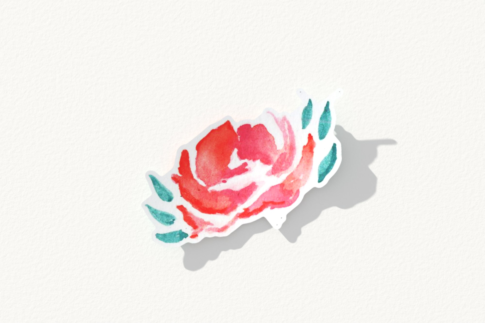
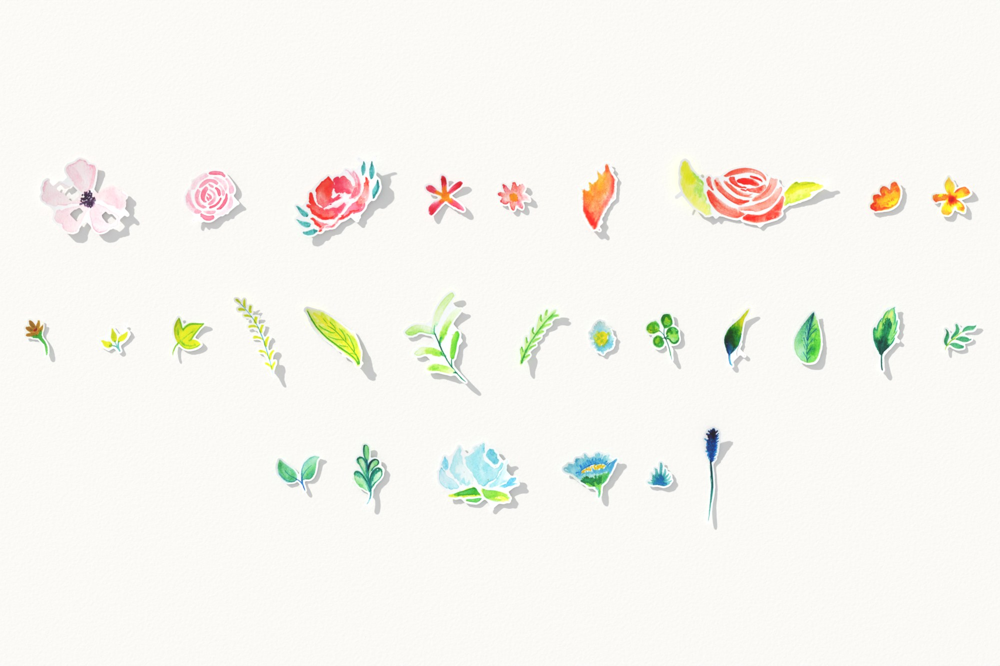

Study 57 · 2 November 2026
Secret Senses, her hand again
Each motif at the size she painted it, a finer paper margin, white paper in neutral light.
One flower

The whole hand

Study 57 · 2 November 2026
Each motif at the size she painted it, a finer paper margin, white paper in neutral light.

